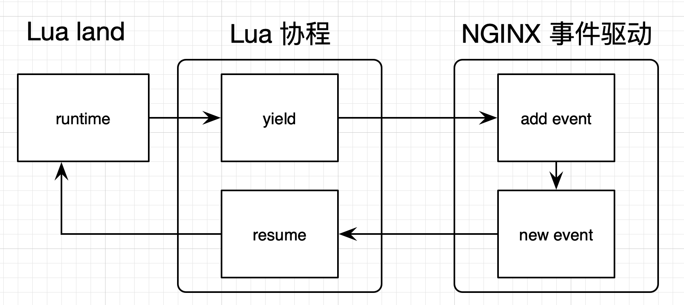

- 00 开篇词 OpenResty，为你打开高性能开发的大门.md
- 01 初探OpenResty的三大特性.md
- 02 如何写出你的“hello world”？.md
- 03 揪出隐藏在背后的那些子项目.md
- 04 如何管理第三方包？从包管理工具luarocks和opm说起.md
- 05 [视频]opm项目导读.md
- 06 OpenResty 中用到的 NGINX 知识.md
- 07 带你快速上手 Lua.md
- 08 LuaJIT分支和标准Lua有什么不同？.md
- 09 为什么 lua-resty-core 性能更高一些？.md
- 10 JIT编译器的死穴：为什么要避免使用 NYI ？.md
- 11 剖析Lua唯一的数据结构table和metatable特性.md
- 12 高手秘诀：识别Lua的独有概念和坑.md
- 13 [视频]实战：基于FFI实现的lua-resty-lrucache.md
- 14 答疑（一）：Lua 规则和 NGINX 配置文件产生冲突怎么办？.md
- 15 OpenResty 和别的开发平台有什么不同？.md
- 16 秒杀大多数开发问题的两个利器：文档和测试案例.md
- 17 为什么能成为更好的Web服务器？动态处理请求和响应是关键.md
- 18 worker间的通信法宝：最重要的数据结构之shared dict.md
- 19 OpenResty 的核心和精髓：cosocket.md
- 20 超越 Web 服务器：特权进程和定时任务.md
- 21 带你玩转时间、正则表达式等常用API.md
- 22 [视频]从一个安全漏洞说起，探寻API性能和安全的平衡.md
- 23 [视频]导读lua-resty-requests：优秀的lua-resty-_是如何编写的？.md
- 24 实战：处理四层流量，实现Memcached Server.md
- 25 答疑（二）：特权进程的权限到底是什么？.md
- 26 代码贡献者的拦路虎：test__nginx 简介.md
- 27 test__nginx 包罗万象的测试方法.md
- 28 test__nginx 还可以这样用？.md
- 29 最容易失准的性能测试？你需要压测工具界的“悍马”wrk.md
- 30 答疑（三）如何搭建测试的网络结构？.md
- 31 性能下降10倍的真凶：阻塞函数.md
- 32 让人又恨又爱的字符串操作.md
- 33 性能提升10倍的秘诀：必须用好 table.md
- 34 特别放送：OpenResty编码指南.md
- 35 [视频]实际项目中的性能优化：ingress-nginx中的几个PR解读.md
- 36 盘点OpenResty的各种调试手段.md
- 37 systemtap-toolkit和stapxx：如何用数据搞定“疑难杂症”？.md
- 38 [视频]巧用wrk和火焰图，科学定位性能瓶颈.md
- 39 高性能的关键：shared dict 缓存和 lru 缓存.md
- 40 缓存与风暴并存，谁说缓存风暴不可避免？.md
- 41 lua-resty-_ 封装，让你远离多级缓存之痛.md
- 42 如何应对突发流量：漏桶和令牌桶的概念.md
- 43 灵活实现动态限流限速，其实没有那么难.md
- 44 OpenResty 的杀手锏：动态.md
- 45 不得不提的能力外延：OpenResty常用的第三方库.md
- 46 答疑（四）：共享字典的缓存是必须的吗？.md
- 47 微服务API网关搭建三步曲（一）.md
- 48 微服务API网关搭建三步曲（二）.md
- 49 微服务API网关搭建三步曲（三）.md
- 50 答疑（五）：如何在工作中引入 OpenResty？.md
- 结束语 行百里者半九十.md
19 OpenResty 的核心和精髓：cosocket
你好，我是温铭，今天我们来学习下 OpenResty 中的核心技术：cosocket。
其实在前面的课程中，我们就已经多次提到过它了，cosocket 是各种 lua-resty-* 非阻塞库的基础，没有 cosocket，开发者就无法用 Lua 来快速连接各种外部的网络服务。
在早期的 OpenResty 版本中，如果你想要去与 Redis、memcached 这些服务交互的话，需要使用 redis2-nginx-module、redis-nginx-module 和 memc-nginx-module这些 C 模块.这些模块至今仍然在 OpenResty 的发行包中。
不过，cosocket 功能加入以后，它们都已经被 lua-resty-redis 和 lua-resty-memcached 替代，基本上没人再去使用 C 模块连接外部服务了。
什么是 cosocket？
那究竟什么是cosocket 呢？事实上，cosocket是 OpenResty 中的专有名词，是把协程和网络套接字的英文拼在一起形成的，即 cosocket = coroutine + socket。所以，你可以把 cosocket 翻译为“协程套接字”。
cosocket 不仅需要 Lua 协程特性的支持，也需要 Nginx 中非常重要的事件机制的支持，这两者结合在一起，最终实现了非阻塞网络 I/O。另外，cosocket 支持 TCP、UDP 和 Unix Domain Socket。
如果我们在 OpenResty 中调用一个 cosocket 相关函数，内部实现便是下面这张图的样子：

记性比较好的同学应该发现了，在前面 OpenResty 原理和基本概念的那节课里，我也用过这张图。从图中你可以看到，用户的 Lua 脚本每触发一个网络操作，都会有协程的 yield 以及 resume。
遇到网络 I/O 时，它会交出控制权（yield），把网络事件注册到 Nginx 监听列表中，并把权限交给 Nginx；当有 Nginx 事件达到触发条件时，便唤醒对应的协程继续处理（resume）。
OpenResty 正是以此为蓝图，封装实现 connect、send、receive 等操作，形成了我们如今见到的 cosocket API。下面，我就以处理 TCP 的 API 为例来介绍一下。处理 UDP 和 Unix Domain Socket ，与TCP 的接口基本是一样的。
cosocket API 和指令简介
TCP 相关的 cosocket API 可以分为下面这几类。
- 创建对象：ngx.socket.tcp。
- 设置超时：tcpsock:settimeout 和 tcpsock:settimeouts。
- 建立连接：tcpsock:connect。
- 发送数据：tcpsock:send。
- 接受数据：tcpsock:receive、tcpsock:receiveany 和 tcpsock:receiveuntil。
- 连接池：tcpsock:setkeepalive。
- 关闭连接：tcpsock:close。
我们还要特别注意下，这些 API 可以使用的上下文：
rewrite_by_lua*, access_by_lua*, content_by_lua*, ngx.timer.*, ssl_certificate_by_lua*, ssl_session_fetch_by_lua*_
这里我还要强调一点，归咎于 Nginx 内核的各种限制，cosocket API 在 set_by_lua*， log_by_lua*， header_filter_by_lua* 和 body_filter_by_lua* 中是无法使用的。而在 init_by_lua* 和 init_worker_by_lua* 中暂时也不能用，不过 Nginx 内核对这两个阶段并没有限制，后面可以增加对这它们的支持。
此外，与这些 API 相关的，还有 8 个 lua_socket_ 开头的 Nginx 指令，我们简单来看一下。
lua_socket_connect_timeout：连接超时，默认 60 秒。lua_socket_send_timeout：发送超时，默认 60 秒。lua_socket_send_lowat：发送阈值（low water），默认为 0。lua_socket_read_timeout： 读取超时，默认 60 秒。lua_socket_buffer_size：读取数据的缓存区大小，默认 4k/8k。lua_socket_pool_size：连接池大小，默认 30。lua_socket_keepalive_timeout：连接池 cosocket 对象的空闲时间，默认 60 秒。lua_socket_log_errors：cosocket 发生错误时，是否记录日志，默认为 on。
这里你也可以看到，有些指令和 API 的功能一样的，比如设置超时时间和连接池大小等。不过，如果两者有冲突的话，API 的优先级高于指令，会覆盖指令设置的值。所以，一般来说，我们都推荐使用 API 来做设置，这样也会更加灵活。
接下来，我们一起来看一个具体的例子，弄明白到底如何使用这些 cosocket API。下面这段代码的功能很简单，是发送 TCP 请求到一个网站，并把返回的内容打印出来：
$ resty -e 'local sock = ngx.socket.tcp()
sock:settimeout(1000) -- one second timeout
local ok, err = sock:connect("www.baidu.com", 80)
if not ok then
ngx.say("failed to connect: ", err)
return
end
local req_data = "GET / HTTP/1.1\r\nHost: www.baidu.com\r\n\r\n"
local bytes, err = sock:send(req_data)
if err then
ngx.say("failed to send: ", err)
return
end
local data, err, partial = sock:receive()
if err then
ngx.say("failed to receive: ", err)
return
end
sock:close()
ngx.say("response is: ", data)'
我们来具体分析下这段代码。
- 首先，通过
ngx.socket.tcp()，创建 TCP 的 cosocket 对象，名字是 sock。 - 然后，使用
settimeout()，把超时时间设置为 1 秒。注意这里的超时没有区分 connect、receive，是统一的设置。 - 接着，使用
connect()去连接指定网站的 80 端口，如果失败就直接退出。 - 连接成功的话，就使用
send()来发送构造好的数据，如果发送失败就退出。 - 发送数据成功的话，就使用
receive()来接收网站返回的数据。这里receive()的默认参数值是*l，也就是只返回第一行的数据；如果参数设置为了*a，就是持续接收数据，直到连接关闭； - 最后，调用
close()，主动关闭 socket 连接。
你看，短短几步就可以完成，使用 cosocket API 来做网络通信，就是这么简单。不过，不能满足于此，接下来，我们对这个示例再做一些调整。
第一个动作，对 socket 连接、发送和读取这三个动作，分别设置超时时间。
我们刚刚用的settimeout() ，作用是把超时时间统一设置为一个值。如果要想分开设置，就需要使用 settimeouts() 函数，比如下面这样的写法：
sock:settimeouts(1000, 2000, 3000)
这行代码表示连接超时为 1 秒，发送超时为 2 秒，读取超时为 3 秒。
在OpenResty 和 lua-resty 库中，大部分和时间相关的 API 的参数，都以毫秒为单位，但也有例外，需要你在调用的时候特别注意下。
第二个动作，receive接收指定大小的内容。
刚刚说了，receive() 接口可以接收一行数据，也可以持续接收数据。不过，如果你只想接收 10K 大小的数据，应该怎么设置呢？
这时，receiveany() 闪亮登场。它就是专为满足这种需求而设计的，一起来看下面这行代码：
local data, err, partial = sock:receiveany(10240)
这段代码就表示，最多只接收 10K 的数据。
当然，关于receive，还有另一个很常见的用户需求，那就是一直获取数据，直到遇到指定字符串才停止。
receiveuntil() 专门用来解决这类问题，它不会像 receive() 和 receiveany() 一样返回字符串，而会返回一个迭代器。这样，你就可以在循环中调用它来分段读取匹配到的数据，当读取完毕时，就会返回 nil。下面就是一个例子：
local reader = sock:receiveuntil("\r\n")
while true do
local data, err, partial = reader(4)
if not data then
if err then
ngx.say("failed to read the data stream: ", err)
break
end
ngx.say("read done")
break
end
ngx.say("read chunk: [", data, "]")
end
这段代码中的 receiveuntil 会返回 \r\n 之前的数据，并通过迭代器每次读取其中的 4 个字节，也就实现了我们想要的功能。
第三个动作，不直接关闭 socket，而是放入连接池中。
我们知道，没有连接池的话，每次请求进来都要新建一个连接，就会导致 cosocket 对象被频繁地创建和销毁，造成不必要的性能损耗。
为了避免这个问题，在你使用完一个 cosocket 后，可以调用 setkeepalive() 放到连接池中，比如下面这样的写法：
local ok, err = sock:setkeepalive(2 * 1000, 100)
if not ok then
ngx.say("failed to set reusable: ", err)
end
这段代码设置了连接的空闲时间为 2 秒，连接池的大小为 100。这样，在调用 connect() 函数时，就会优先从连接池中获取 cosocket 对象。
不过，关于连接池的使用，有两点需要我们注意一下。
- 第一，不能把发生错误的连接放入连接池，否则下次使用时，就会导致收发数据失败。这也是为什么我们需要判断每一个 API 调用是否成功的一个原因。
- 第二，要搞清楚连接的数量。连接池是 worker 级别的，每个 worker 都有自己的连接池。所以，如果你有 10 个 worker，连接池大小设置为 30，那么对于后端的服务来讲，就等于有 300 个连接。
写在最后
总结一下，今天我们学习了cosocket 的基本概念，以及相关的指令和 API，并通过一个实际的例子，熟悉了TCP 相关的 API 应该如何使用。而UDP 和 Unix Domain Socket的使用类似于TCP，弄明白今天所学，你基本上都能迎刃而解了。
从中你应该也能感受到，cosocket 用起来还是比较容易上手的，而且用好它，你就可以去连接各种外部的服务了，可以说是给 OpenResty 插上了想象的翅膀。
最后，给你留两个作业题。
第一问，在今天的例子中，tcpsock:send 发送的是字符串，如果我们需要发送一个由字符串构成的 table，又该怎么处理呢？
第二问，你也看到了，cosocket 在很多阶段中不能使用，那么，你能否想到一些绕过的方式呢？
欢迎留言和我分享，也欢迎你把这篇文章分享给你的同事、朋友，我们一起交流，一起进步。
© 2019 - 2023 Liangliang Lee. Powered by gin and hexo-theme-book.